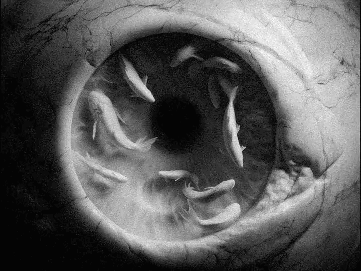

Ein Käfig ging einen Vogel suchen. Es gibt unendlich viel Hoffnung nur nicht für uns. Ein Buch muss die Axt sein für das gefrorene Meer in uns. In einem Kampf zwischen dir und der Welt sekundiere der Welt. Wege entstehen dadurch dass man sie geht. Von einem gewissen Punkt an gibt es keine Rückkehr. Dieser Punkt ist zu erreichen. Die Krähen behaupten eine einzige Krähe könne den Himmel zerstören. Vor dem Gesetz steht ein Türhüter. Dieser Eingang war nur für dich bestimmt. Das Gericht will nichts von dir. Es nimmt dich auf wenn du kommst und es entlässt dich wenn du gehst. Die Liebe ist so unproblematisch wie ein Fahrzeug. Problematisch sind nur die Lenker. Jemand musste Josef K. verleumdet haben, denn ohne daß er etwas Böses getan hätte, wurde er eines Morgens verhaftet. Als Gregor Samsa eines Morgens aus unruhigen Träumen erwachte, fand er sich in seinem Bett zu einem ungeheuren Ungeziefer verwandelt. Es war spät abends, als K. ankam. Es war an einem Sonntagvormittag im schönsten Frühling. Ehrwürdige Herren der Akademie Ein Käfig ging einen Vogel suchen. Es gibt unendlich viel Hoffnung, nur nicht für uns. In einem Kampf zwischen dir und der Welt sekundiere der Welt. Wege entstehen dadurch daß man sie geht. Von einem gewissen Punkt an gibt es keine Rückkehr. Dieser Punkt ist zu erreichen. Die Krähen behaupten, eine einzige Krähe könne den Himmel zerstören. Vor dem Gesetz steht ein Türhüter. Dieser Eingang war nur für dich bestimmt. Das Gericht will nichts von dir. Es nimmt dich auf wenn du kommst und es entlässt dich wenn du gehst. Die Liebe ist so unproblematisch wie ein Fahrzeug. Problematisch sind nur die Lenker. Jemand musste Josef K. verleumdet haben, denn ohne daß er etwas Böses getan hätte, wurde er eines Morgens verhaftet. Als Gregor Samsa eines Morgens aus unruhigen Träumen erwachte, fand er sich in seinem Bett zu einem ungeheuren Ungeziefer verwandelt. Es war spät abends, als K. ankam. Es war an einem Sonntagvormittag im schönsten Frühling. In den letzten Jahrzehnten ist das Interesse an Hungerkünstlern sehr zurückgegangen. Ein Geier hackte mir an den Füßen. Einige behaupten, das Wort Odradek stamme aus dem Slawischen. Es ist ein eigentümlicher Apparat. Ich befahl, mein Pferd aus dem Stall zu holen. Ich war in großer Verlegenheit.
~JOIN~